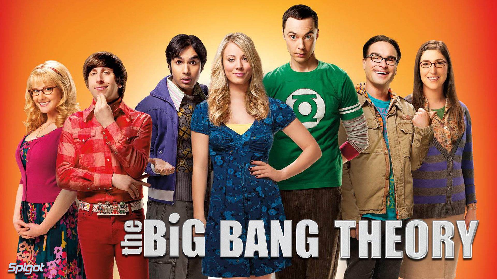
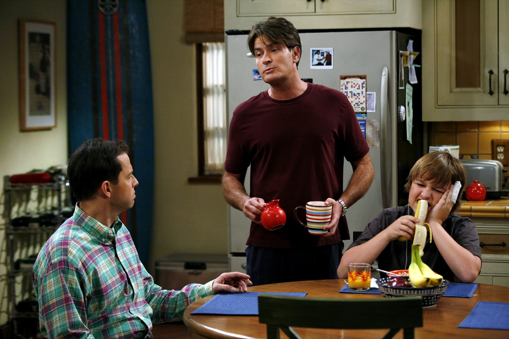
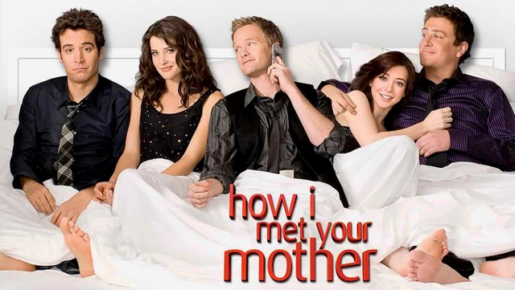
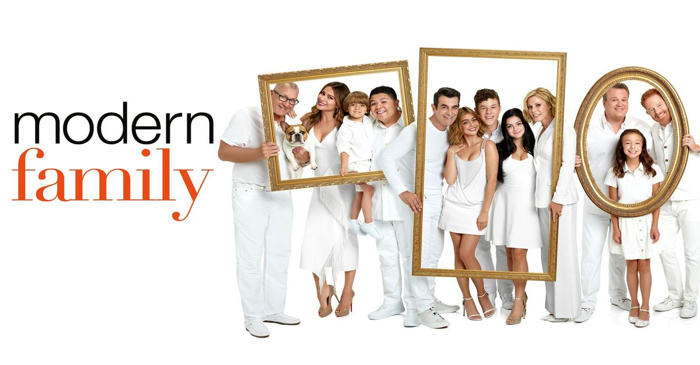

The Big Bang Theory
Leonard Hofstadter e Sheldon Cooper são dois brilhantes físicos que trabalham no Instituto de Tecnologia da Califórnia - Caltech e dividem o mesmo apartamento que vivem em Pasadena. Suas vidas se complicam quando uma belíssima jovem, uma garçonete e aspirante a atriz, Penny, se muda para o apartamento da frente. A chegada dela perturbou um pouco Sheldon já que ele prefere passar as noites jogando Klingon Boggle com seus amigos e colegas de trabalho, que também são cientistas, Howard e Raj, sem ligar para Penny. No entanto, Leonard vê em Penny a possibilidade de aprender a interagir com as mulheres e sente que ela é um novo mundo cheio de possibilidades, e quem sabe, do amor. Sheldon acha que isso é um sonho que nunca se realizará, porém, talvez nesta comédia estas mentes brilhantes possam aprender algumas coisas com uma jovem com efeito cômico, habilidades sociais e senso comum de Penny.
- Criação: Chuck Lorre e Bill Prady
- Duração: 23 min. aprox.
Two and a Half Men
A série é sobre dois irmãos bem diferentes um do outro. Charlie Harper um solteiro rico compositor de jingles, que mora numa bela casa na praia de Malibu, em Los Angeles. Está sempre de bem com a vida, se envolvendo com jogos, bebidas e mulheres. Seu estilo de vida muda quando seu irmão, Alan Harper, que tem um filho, Jake Harper, passam a morar com Charlie em sua mansão na praia de Malibu, depois que a esposa de Alan, Judith, pede divórcio.
Para complicar ainda mais a vida dos dois, a mãe deles, Evelyn Harper, não liga muito pra eles, sendo claro sua preferência por Alan. Charlie ainda tem que lidar com a sua vizinha e ex-namorada estranha, Rose que está sempre o perseguindo, e vigiando. Alan também tem de aturar sua ex-esposa Judith que está sempre lhe dando o fora.
- Criação: Chuck Lorre e Lee Aronsohn
- Duração: 21 min. aprox.
How I Met Your Mother
Ted Mosby conta aos filhos as histórias e peripécias que o levaram a conhecer a mãe deles.
Em 2005, aos 27 anos, o jovem Ted Mosby, após o seu melhor amigo, Marshall Eriksen, ficar noivo, decide finalmente ir em busca da sua cara-metade. Com gestos românticos questionáveis, Ted conhece Robin Scherbatsky, no bar que costumavam frequentar, Maclaren's Pub. Após uma série de eventos Robin passa a pertencer ao grupo de amigos de Ted: Barney, Marshall, e sua noiva, Lily, que namoram desde o primeiro ano da faculdade.
- Criação: Chuck Lorre e Bill Prady
- Duração: 23 min. aprox.
Modern Family
A série se passa em Los Angeles e foca-se nos relacionamentos entre uma família liderada por Jay Pritchett, que após divorciar-se, casou-se com uma mulher colombiana mais nova e atraente Gloria Delgado, mãe do pré-adolescente Manny Delgado. Ela lida com o machismo, a xenofobia e a adolescência do filho, o atípico Manny, que é um rapaz romântico, poético e intelectual. A filha de Jay, Claire Dunphy e o esposo , Phil, pais de Haley, Alex e Luke, preocupam-se com o stress cotidiano, com a escola, o trabalho e a rebeldia do filho Mitchell, casado com seu marido Cameron que vivem situações humorísticas diariamente. Já os filhos, Haley, Alex e Luke, preocupam com questões típicas da juventude. A série aborda diversos pontos das famílias atuais, como a homoafetividade, a adoção e o divórcio. .
- Criação: Christopher Lloyd e Steven Levitan
- Duração: 23 min. aprox.